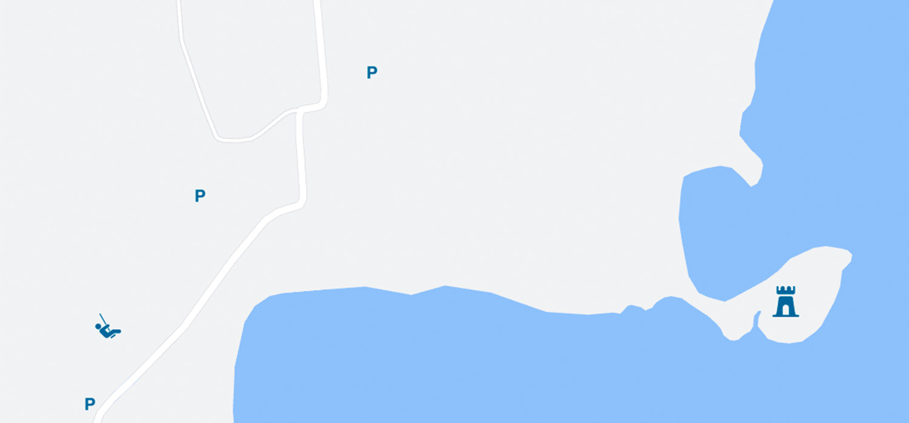

Ruinen Hald Slot
Hald Slot, også kaldet Niels Bugges og Jørgen Friis´ Hald, blev bygget i 1347. Det der er tilbage i dag er genopbyggelser af den middelalderlige hald.
Man kan parkere ved Hald hovedgård og gå ned til ruinen. Det er ikke muligt at køre derned, men der er stier hele vejen.
Der er lagt flere millioner i at genopbygge og bevare ruinen, og er derfor under renovering. Det er stadig offentligt tilgængeligt.


Historie
Hald ege området blev opkøbt af Nielsen Bugge i 1346. hvor efter han byggede borgen.
I 1351 opstod der et oprør mod kongen, Valdemar Atterdag. De daværende holstenske grever, hertugen af Slesvig og jyske stormænd; herunder Niels Bugge deltog.
Der blev i 1358 forsøgt at finde en fredsaftale mellem de oprørerende parter og kongen, men det mislykkedes.
Da Niels Bugge og to andre riddere var på vej hjem blev de angrebet og dræbt, hvorefter Atterdag fik skylden, men svor det ikke var ham.
Borgen gik til Bugges datter og mand der deltog i et andet opgør i 1368-73, hvorved kongen fik overtaget borgen.
Dronning Margrete 1. gav Hald til Viborgs bispestol i 1393, så de kunne rive den ned og bruge træet og stenene til Vor Frues Kapel ved Viborg Domkirke.
Herefter blev de resterende bygninger fra borgen brugt af katolske Viborg-bisper i omtrent 130 år.
I 1528 fik Jørgen Friis, den sidste katolske biskop i Viborg, ideen til at renovere borgen og gøre den til en stærk og moderne kanonborg.
Biskoppen opholdte sig på borgen under reformationen, men endte med selv at blive sat til fange på borgen og derfor faldt borgen tilbage i konges hænder.
I 1536 blev halden til et slotet og blev en administrationscentrum for det nærliggende land, og gav betydelige indtægter.
I 1664 fik brødrene de Lima Hald, hamborgske forretningsmænd, Slot af Frederik 3. hvor de havde den i 41 år.
I 1703 købte Generalmajor Gregers Daa Hald Slot af de Lima enken. Daa nedrev slottet og flyttede herregården op til Daas Herregård.
Herefter skiftede hald ejer et par gange, uden der skete noget med øen slottet lå på, indtil Christopher Krabbe i 1889 begyndte at arkæologiske undersøgelser.
Undersøgelserne frembragte det otte meter høje tårn hvorefter man begyndte at restaurere det. Her blev der tilføjet en etage til, og der blev lavet et lille værelse og restaurant inden det blev erklæret faldefærdigt og revet ned i 1930.
Ruinerne er senest blevet restaureret i 2022.
Lokation
Bemærkninger
- Det er ikke muligt at parkere tæt ved slottet, men man kan parkere ved hovedgården og gå der ud.
- Der er grussti hele vejen ud til slottet
- Slottet er under restaurering og derfor har nogle bygge materiale stående.